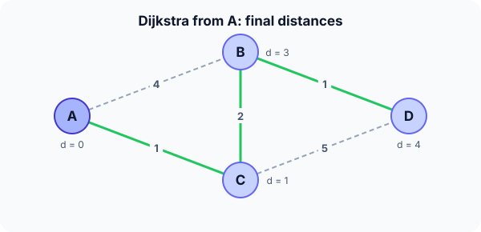

Prerequisites
- BFS, the unweighted version of the idea.
- Priority queue.
- Weighted graphs (see representations).
The analogy
Everyday analogy
Imagine pouring water at the start of a network of pipes, where each pipe's length is its travel time. The water reaches the nearest junction first, then spreads from there.
Dijkstra simulates that wave: it always settles the unsettled vertex the water would reach next, the one with the smallest known distance. Once reached, that time can't get any shorter.
How it works
Precondition: all edge weights must be non-negative. With a negative edge, a settled distance could later improve, and Dijkstra would give wrong answers; use Bellman-Ford instead.
Start with one run by hand
Undirected edges: A–B 4, A–C 1, C–B 2, B–D 1, C–D 5. Start at A: dist A = 0, others ∞. Each round, settle the closest unsettled vertex and relax its edges. Predict, then open "Check".
Example: predict before you read
Step 1. Settle A. Predict the new tentative distances.
Check
B = 4, C = 1, D = ∞.
Step 2. Cover the next line and guess: which vertex is settled next, and what does it improve?
Check
C (distance 1). Through C: B = min(4, 1 + 2) = 3 and D = 1 + 5 = 6.
Step 3. Settle the next vertex and finish. Predict the final distances.
Check
B (3) is settled; through B, D = min(6, 3 + 1) = 4. Then D. Final: A 0, B 3, C 1, D 4.

Quick recall: Before reading further, cover the text above and say out loud: why is the closest unsettled vertex's distance final?
Check your answer
Any other route to it would pass through some unsettled vertex that is already at least as far, and with non-negative weights the rest of that route can only add more.
Finish the picture: why negative weights break it
Directed edges: S → A 2, S → B 3, B → A −2.
- Dijkstra's answer. Predict what it settles first and the distance it reports for A.
Check
It settles A first at distance 2 (2 < 3) and never revisits it, reporting 2.
- The truth. Predict the real shortest distance to A.
Check
S → B → A costs 3 − 2 = 1. Dijkstra was wrong because the negative edge appeared after A was settled.
Quick recall: Without scrolling up, say out loud: what does "relaxing" an edge u → v mean?
Check your answer
Checking whether going through u gives v a shorter distance: if dist[u] + w(u, v) < dist[v], update dist[v].
The rule in plain words
Set dist[start] = 0, all others ∞. Repeat: pick the unsettled vertex u with the smallest dist, settle it, and relax every edge u → v.
A min-priority queue makes "pick the smallest" fast; a plain array scan is simpler and fine for dense graphs.
Quick recall: Before you read the code, write one round of Dijkstra in your own words. Then check below.
Check your answer
1. Pick the unsettled vertex with the smallest distance. 2. Mark it settled. 3. For each neighbour, if going through it is shorter, update the neighbour's distance.
The code
Read this code after you have done the run by hand. It will make more sense.
void dijkstra(int w[][4], int n, int s, int dist[]) { /* w = 0 means no edge */
int done[4] = {0};
for (int i = 0; i < n; i++) dist[i] = INT_MAX;
dist[s] = 0;
for (int round = 0; round < n; round++) {
int u = -1;
for (int i = 0; i < n; i++) /* closest unsettled vertex */
if (!done[i] && (u == -1 || dist[i] < dist[u])) u = i;
if (dist[u] == INT_MAX) break; /* the rest is unreachable */
done[u] = 1;
for (int v = 0; v < n; v++) /* relax u's edges */
if (w[u][v] && dist[u] + w[u][v] < dist[v]) dist[v] = dist[u] + w[u][v];
}
}Definition
What you just did, in one line: Dijkstra's algorithm computes single-source shortest paths in a graph with non-negative weights by repeatedly settling the closest unsettled vertex and relaxing its edges.
graph LR
A((A)) ---|4| B((B))
A ---|1| C((C))
C ---|2| B
B ---|1| D((D))
C ---|5| D
How fast is it?
Quick recall: Before looking at the formula, predict: what does the array version cost on a graph with $V$ vertices?
Check your answer
$O(V^2)$: $V$ rounds, each scanning all $V$ vertices to find the closest.
Each vertex is settled once and each edge relaxed once. With a binary heap, every settle and every improvement costs $O(\log V)$:
$$O\big((V + E) \log V\big) \text{ with a heap}, \qquad O(V^2) \text{ with an array scan}$$The array version, used in the code above, is better for dense graphs where $E \approx V^2$.
| Version | Time | Best for |
|---|---|---|
| Array scan | $O(V^2)$ | Dense graphs |
| Binary heap | $O((V + E) \log V)$ | Sparse graphs, e.g. road maps |
| Extra space | $O(V)$ | Distances and settled flags |
| Negative edges | Not allowed | Settled distances must never improve |
Warning
Dijkstra silently gives wrong answers with negative edge weights; it doesn't crash or warn. Check the precondition before using it.
Exam tip
Exams love a table of distances after each round. Write one row per settled vertex, and circle the settled value each time.
Common mistakes
- Using it on a graph with a negative edge.
- Settling a vertex when it is first discovered instead of when it is the smallest remaining.
- Adding to ∞ in C (
INT_MAX + woverflows): skip edges from unreachable vertices.
Try it yourself
Exercise 1 (warm-up)
In the example graph, run Dijkstra from D instead. Give the distances to A, B and C.
Hint
D's neighbours are B (1) and C (5).
Answer
B = 1, C = min(5, 1 + 2) = 3, A = min(1 + 4, 3 + 1) = 4.
Exercise 2 (a bit harder)
Add the edge A–D with weight 3 to the example and run from A again. Which distances change, and what is the new shortest-path tree? Write your answer down before you open it.
Show answer
Only D changes: min(4, 3) = 3, reached directly. Tree: A–C, C–B (B = 3), A–D (D = 3).
Did you know?
Did you know?
Edsger Dijkstra designed the algorithm in about twenty minutes in 1956, sitting at a café in Amsterdam, without pencil and paper.
Map apps use Dijkstra-based algorithms such as A*, which adds a "straight-line distance to the goal" hint to explore far fewer roads.
Key points to remember
If you remember one thing from each line, remember the because.
- The closest unsettled distance is final because non-negative edges can only make other routes longer.
- Negative edges break it because a settled distance could still be improved later.
- The heap version is $O((V + E) \log V)$ because each settle and each improvement is a heap operation.
- The array version is $O(V^2)$ because each of $V$ rounds scans all vertices.
- Relaxation is the core step because it's the only place distances get better.
Self-check questions
Answer these in order, out loud. They follow the page, so your answers become the script of your video.
- How is Dijkstra's algorithm like water spreading through pipes?
Sample answer
The water reaches the closest junction first and spreads from there; Dijkstra always settles the vertex the wave would reach next.
- Walk through Dijkstra from A on A–B 4, A–C 1, C–B 2, B–D 1, C–D 5.
Sample answer
Settle A (B = 4, C = 1); settle C (B = 3, D = 6); settle B (D = 4); settle D. Final 0, 3, 1, 4.
- Why does the code break when the closest distance is
INT_MAX?A good answer says what those vertices are.
Sample answer
The remaining vertices can't be reached from the start, so there is nothing left to settle, and adding a weight to
INT_MAXwould overflow. - So what is Dijkstra's algorithm, in one sentence?
Sample answer
A single-source shortest-path algorithm for non-negative weights that repeatedly settles the closest unsettled vertex and relaxes its edges.
- Why does Dijkstra require non-negative weights?
A good answer uses the S → A, S → B, B → A example.
Sample answer
It settles A at 2 for good, but the path through B with the −2 edge costs 1. A negative edge can improve a distance after it was declared final.
- What are the costs of the array and heap versions?
Sample answer
Array: $O(V^2)$. Binary heap: $O((V + E) \log V)$. Both use $O(V)$ extra space.
- When would you choose BFS or Bellman-Ford instead?
Sample answer
BFS when all edges have the same weight; Bellman-Ford when some weights are negative.
- If you had to teach this to a friend in 2 minutes, what would you leave out, and why?
Sample answer
I'd leave out the heap analysis and the overflow detail. I'd keep the water analogy, the 4-vertex run, and "settle the closest, relax its edges, no negative weights".
External resources
- VisuAlgo: Single-source shortest paths: run Dijkstra (and Bellman-Ford) on your own graph.
- GeeksforGeeks: Dijkstra's algorithm: array and heap versions with code.
- Wikipedia: Dijkstra's algorithm: history, proof and variants.
- MIT OCW 6.006: lecture on Dijkstra.
Videos
- YouTube search: Dijkstra explained: pick a walkthrough with a distance table.